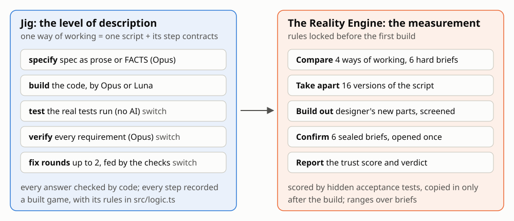
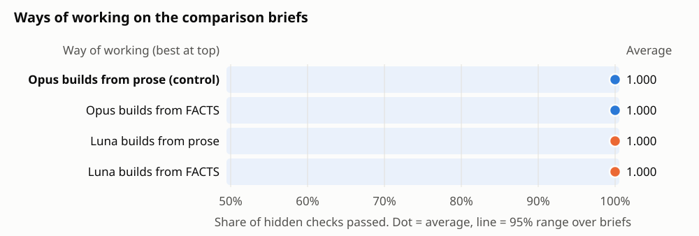

Summary
A biologist explaining how a heart pumps does not talk about quantum physics. Quantum physics is not wrong, and every heartbeat depends on it, but at the level of cells, muscles and blood its detail is summed up in a few reliable rules. Working at that level is what makes the problem possible to think about. Every mature field controls complexity this way, and each level can be trusted only as far as the level below has been measured to behave as assumed.
Work with AI has no such levels yet. Every interaction happens at the bottom: prompt wording, tool permissions, model versions, and the agent's own account of what it did. This paper proposes a higher level, and tests it.
The level. Jig is a small scripting language that describes AI work as requirements, steps, results and checks. A step such as build(spec) is a contract: what the agent may do, what its answer must contain, and how code checks the answer before the next step may use it. The prompts, tools, retries and records sit one level down, written once.
The measurement. The Reality Engine tests AI systems "the way science tests ideas": every option on the same unseen cases, rules locked in advance, a sealed final check. Here it measured Jig's own way of building software. Four ways of working (the builder reading the spec as prose or as the FACTS notes that won the engine's first case study, built by Claude Opus or by the small, cheap GPT-6 Luna) were compared on six hard game briefs; the winner's script was then taken apart step by step; and the best design met the others on six sealed briefs. Every game was scored by hidden acceptance tests that no builder ever saw.
The result. The final design, Luna building from FACTS notes inside Jig's full script, passed all 36 of 36 hidden checks on the sealed briefs: a trust score of 100 percent. With every case passing, the honest statement is a bound: the true rate is very likely above about 90 percent per check, and above about 54 percent per brief. Every way of working, Opus and Luna alike, also passed all 144 checks of the hard comparison briefs. The take-apart found the one pattern with some content: with a FACTS spec, Luna's reliability rested on the script's checks (test and verify switched off: 78 percent; no fix rounds: 89 percent), while with a prose spec it held without them. No step's effect was proven at this size. Luna inside the script matched Opus at about a thirtieth of the build cost.
What this does and does not show. It confirms what is largely expected: on small, well-specified builds with a stated interface, current models get the logic right. The contribution is not a new capability but the bridge: a way of working defined precisely enough by Jig to be measured, measured by the Reality Engine with locked rules and a sealed check, and taken apart to show which of its steps carry its reliability. Finding where such a way of working breaks is the next step.
01The problem: complexity, not capability
Modern AI agents are capable. Given a one-line brief, an agent can produce a working browser game in a few minutes. The difficulty is everything around that capability. To use an agent well, a person has to manage the wording of the prompt, the tools the agent may use and what it could do with them, whether its report ("all tests pass") is true, what went wrong when something did, how often the same request gives a good result, and which model, version and settings were used.
Each of these is manageable alone. Together, across many tasks, people and teams, they are not. The usual answer is to tune by opinion: change a prompt, try a few demos, keep what looks better. A good demo does not make a reliable system, and a system nobody can reason about cannot be made reliable.
The limiting factor is not what the model can do. It is how much complexity a person must hold in mind to use it, and how little of what the agent claims has been checked.
02The idea: levels of description
Every mature field handles complexity the same way: it works at a level of description with its own vocabulary, and sums up the level below in rules it can rely on. Anderson made the argument for science: each level has its own laws, and knowing the level below does not remove the need for them (Anderson, 1972). Software engineering made the same move with layered systems and information hiding (Dijkstra, 1968; Parnas, 1972), and with contracts that say what a component promises (Meyer, 1992).
| Field | Lower level | Higher level | What the higher level says |
|---|---|---|---|
Science | Quantum physics | Chemistry, then biology | "This enzyme speeds up this reaction" |
Computing | Transistors, machine code | Programming languages | "Sort this list" |
Engineering | Material behaviour | Components with ratings | "This bolt holds 10 kN" |
AI work, with Jig | Prompts, tool permissions, tokens, models, the agent's own account of what it did | A Jig script: requirements, steps ( specify, build, test, verify), results and checks | "Built, tested and verified against these requirements", backed by code checks, and measured by the Reality Engine |
Three properties make a level useful: its own vocabulary, hidden detail (summed up, not removed: one can always go down a level and look), and known limits. A bolt is rated; a chemical rule holds over a range of conditions. The third property is the one most often missed. A level is only as good as the evidence that it holds, and that evidence comes from measurement on cases nobody chose to make it look good. Jig supplies the level (section 03); the Reality Engine supplies the measurement (sections 04 to 07).
03Jig: a level of description for AI work
A Jig script talks only about the things a person cares about. This is the heart of the script measured in this paper (Appendix A gives it whole):
spec = specify("Build the browser game described in the brief", brief=brief,
constraints=STACK, format=format, agent="opus")
b = build(spec, test_run=RUN, agent=builder)
for attempt in range(max_fixes + 1):
t = test(spec, run=TEST, expect_files=["dist/index.html"]) # the real tests (no AI)
v = verify(spec, agent="opus") # every requirement checked
if t.status == "completed" and every_must_requirement_satisfied:
break
build(spec, notes=gaps_found, agent=builder) # a fix roundThe script never mentions a prompt, a tool permission, a retry or a log file. Those exist one level down, in each step's definition: a prompt template, a tool policy (for example, verify may read code but not change it, and build cannot run docker or read system information), the exact format the answer must have, and the code checks that run on it. Only a step reaches an AI agent, and a step is always its own line, so every AI interaction is visible to a reader. Everything else (ifs, loops, lists, text) runs locally and costs nothing.
Each word at this level is backed by code, not by the agent's word:
- Built: every file the agent says it created exists, and no secrets were written.
- Tested: the real test commands ran and the real JUnit reports say they passed. No AI takes part in this step.
- Verified: every requirement was checked against the code; every function cited as evidence appears in the file named, and every test cited exists in the recorded run. The verdict is computed by code.
Two features were added to connect Jig to the Reality Engine. A step can name its agent, agent="luna", so the same script runs with Claude Opus through Claude Code or GPT-6 Luna through Codex, each inside its own tool boundary. And specify(format="facts") writes the spec as FACTS notes, the winning format of the Reality Engine's first case study: one short fact per line under THINGS, VALUES, RULES, LINKS and TIMING (Appendix A). The build step then reads the notes instead of the prose spec.
04How the experiment works
The question is the one the Reality Engine asks of any system: how far can this way of working be trusted, and what makes it better? A way of working is the trial pipeline of Appendix A with a set of choices.
| Way of working | The builder reads | The builder is | Role |
|---|---|---|---|
OPUS_PROSE | the prose spec | Claude Opus | control: the game factory as it works today |
OPUS_FACTS | FACTS notes | Claude Opus | does FACTS help a strong builder? |
LUNA_PROSE | the prose spec | GPT-6 Luna | can a small, cheap builder do the work? |
LUNA_FACTS | FACTS notes | GPT-6 Luna | does FACTS help the small builder, as it helped reasoning? |
Claude Opus always writes the spec and does the verifying, the stack and test commands are the same for all, and every way of working gets up to two fix rounds fed by what the tests and verification found.
Items. Eighteen short briefs for browser games, each asking for a playable game and for its rules as named functions in src/logic.ts, each with six hidden acceptance checks (108 in all): six hard briefs for the comparison and take-apart (poker hand ranking, Reversi, checkers with compulsory and multiple captures, Go capture with suicide and ko, cribbage hand counting, chess move legality with pins and checkmate), three for screening and three for confirming in build-out (sliding puzzle, sea battle, towers; number grid, peg jump, five-letter word guess), and six sealed (the game of life, a code breaker, a box pusher, blackjack, lights out, dice poker). The six checks of a brief share one build and form a cluster, so ranges resample briefs, not checks.
Scoring. After the pipeline finishes, the hidden checks are copied into the built app and run under the pack's own test configuration. A check scores 1 if it passes. A build that failed, has no src/logic.ts or does not compile scores 0 on all six. The user interface is not scored.
Stages. Compare: all four ways of working on the six hard briefs. Take apart: the winner's script, not its wording: four parts, the spec format and three of the script's steps (the test step, the verify step, the fix rounds), each switched off alone and in every combination, sixteen versions on the same briefs. Build out: a designer, Claude Opus with no tools, writes new versions of two text parts (an extra rule for the spec writer, extra notes for the builder) from the engine's brief, which holds scores and counts only; each is screened on fresh briefs, and the promising ones confirmed on more. Confirm: the best design meets the control and the runner-up on the sealed briefs, opened once.

05How we kept it honest
The Reality Engine's rules apply unchanged; the pack adds its own.
- Locked before any build. Pilot 2's plan, the engine and the pack's code were fingerprinted at 15:03 on 14 November 2026 (lock
2660f8ee5c4e8f2f) and committed to the repository before the first build. The engine's lock covers only code, so the pack also shipsfrozen.py, the sha256 of every brief, hidden test, reference implementation and the trial pipeline; the pack refuses to start if any has changed. - Hidden tests proven first. Every hidden test was run against a reference implementation of its brief; all 144 tests of all 24 briefs written pass (
check_references.py). A wrong test would otherwise punish a correct build. - The builder never sees the exam. Hidden tests are copied in only after the pipeline has finished, and the pack voids any build whose agent event logs mention the hidden tests' folder or file names.
- A fixed control and a sealed check, opened once at 16:52.
- Failures count; nothing is deleted. A failed build scores 0 on all its checks. Every voided build and record is kept, renamed, with its reason written beside it.
What changed after the lock, and why. The lock log records two more entries, both disclosed here. At 15:12, an operational change: the number of builds run at once was raised from 5 to 10 to shorten the run; the five builds then in flight were stopped before they were scored and built again; no rule, item or score was affected. At 15:54, a fix: a hash-based game number had given two take-apart versions the same game folder, so one version's spec step failed on the taken name (and was scored 0 by mistake) and the other's builds may have been disturbed. The pack now gives each version a unique recorded number; all builds and 13 engine records of both versions were voided and rebuilt. No other result was affected.
Pilot 1, a dry run. An earlier run on easier briefs is kept unchanged in the repository as a dry run, not a result. It showed the whole path working, and a ceiling: every way of working passed every comparison check. It also had three locks, a stage redesigned mid-run and an incident in which a file a running engine read was edited; its lessons (fix the design before the lock; never change files a running engine reads) shaped pilot 2, which used harder comparison briefs. Its sealed briefs were never opened, and are pilot 2's sealed set.
One rule could not be kept as strictly as in the engine's own case study: the author wrote the briefs, the hidden tests and the pipeline, and saw one live test build (on an easier brief, in a separate folder) that checked the wiring before the lock. Nothing was tuned on it.
06The run at a glance
| Time (14 Nov 2026) | Event |
|---|---|
15:03 | Plan locked and committed; comparison starts (4 ways of working × 36 checks) |
15:12 | Operational change: 10 builds at once |
15:28 | Comparison done: every way of working 36 of 36; winner Luna from FACTS on the tie-break |
15:54 | Fix: unique game numbers; two take-apart versions voided and rebuilt |
16:34 | Take-apart done: no part passed the effect test; the full script kept |
16:52 | Build-out screen done: no new version led by the required +0.03; sealed set opened |
17:08 | Final check done; trust report written |
The run built 141 games and scored 918 hidden checks across 22 designs in just over two hours, on one workstation, with up to ten builds at once.

| Usage and cost | Tokens | Cost |
|---|---|---|
Claude Opus (specs, verification, Opus builds), as reported | 14.9 million (1.9 M output, 3.3 M cache write, 9.7 M cache read) | $65.82 |
GPT-6 Luna (Luna builds), at OpenAI's list price | 73.5 million (67.1 M of them cached input, 1.5 M output) | ≈ $1.92 |
Stopped or voided work (never scored) | ≈ $4.16 | |
Total | ≈ $71.90 |
Luna ran on a ChatGPT subscription and Opus on a Claude subscription; the dollar figures are what the same tokens cost at API list prices (Luna: $0.10, $0.01 and $0.50 per million input, cached and output tokens; Opus: $4 and $20 per million input and output, cache reads $0.20).
07Results
Compare: every way of working got every check right
On the six hard briefs, all four ways of working passed all 36 hidden checks: 144 of 144. The engine ranked Luna from FACTS first on its tie-break and marked the top as tied. The difference was in the work it took: Opus never needed a fix round, while Luna needed fix rounds on 4 of its 12 builds (Reversi twice, Go, cribbage; six rounds in all) before every check passed.

Take apart: which steps of the script carry its reliability
The winner's script (Luna, FACTS, every step on) was built in sixteen versions on the same six briefs:
| Script version (Luna building) | Spec as FACTS | Spec as prose |
|---|---|---|
Full script (every step on) | 100% | 100% |
Test step off | 94% | 100% |
Verify step off | 94% | 100% |
Test step and verify off | 78% | 100% |
No fix rounds | 89% | 100% |
Test step off, no fix rounds | 100% | 92% |
Verify off, no fix rounds | 100% | 100% |
Test step, verify and fix rounds all off | 86% | 100% |
With a FACTS spec, Luna's reliability rested on the script's checks: switch off the test step and verification together and it fell to 78 percent; take away the fix rounds and it fell to 89 percent. With a prose spec, Luna stayed close to perfect even with the checks switched off. The engine's estimates of each part's effect, with 95 percent ranges:

| Part changed | Effect | 95% range | p |
|---|---|---|---|
Spec format FACTS → prose | +0.062 | −0.011 to +0.136 | 0.08 |
Test step switched off | −0.042 | −0.102 to +0.019 | 0.14 |
Verify step switched off | −0.021 | −0.076 to +0.035 | 0.38 |
Fix rounds 2 → 0 | 0.000 | −0.113 to +0.113 | 1.00 |
No part passed the engine's effect test, so the keep rule kept the full script unchanged. The pattern is suggestive, not proven: six briefs at a ceiling cannot prove a step's worth at the 95 percent level, even where a version visibly loses checks. FACTS, the format that helped a small model reason about a system, gave a builder no advantage here, and may have made it more dependent on the checks.
Build out: nothing beat the full script
The designer, seeing only scores and counts, aimed its four new versions at the one cost it could still see, the fix rounds: a spec rule giving every game rule as an exactly named function with worked edge cases; a rule for a deterministic, seedable core with numbered checkable requirements; builder notes to write one test per rule before the interface; and builder notes to re-check every rule and edge case before finishing. On three fresh briefs every version, like the current best, passed all 18 checks, so none led by the required +0.03 and the rounds stopped.
The final check on unseen briefs

On the six sealed briefs, opened once, the final design (Luna from FACTS, full script), the control (Opus from prose) and the runner-up (Luna from prose) each passed all 36 checks. Luna needed fix rounds on three of its sealed builds. Both leads are therefore 0 and not counted.
The trust report
| Question | Answer |
|---|---|
How often it is right | 100% of 36 sealed checks on 6 briefs. The engine's range is [100%, 100%], which overstates the certainty: with every case passing, the 95 percent lower bound is about 90 percent if checks are counted as independent, and about 54 percent per brief. The truth lies between. |
Reliability | Every run finished without a design failure (36 of 36) |
Why it fails | No failures on the sealed briefs |
Verdict | Luna from FACTS, full script. Equal to the control and the runner-up (leads 0, not counted) |
How hard we looked | 4 ways of working, 8 new versions, 22 designs built, 918 scored checks, 4 stages; 0 changes kept |
Headroom | Closest rival: the control (lead 0). Best unproven change: the spec as prose (+0.062, −0.011 to +0.136) |
Cost
A game built the control's way (Opus writes the spec, builds and verifies) cost about $1.00 in Opus usage and took 4.4 minutes. Built the final design's way (Opus writes the spec and verifies, Luna builds) it cost about $0.52 and took 7.6 minutes, fix rounds included. The build step itself cost about $0.50 with Opus and about $0.016 with Luna, roughly a thirtieth.
08What can be improved
- A ceiling: simple builds are already reliable. The main limit of this pilot. Every way of working passed nearly every check, so the comparison could not separate them and the take-apart could not prove any step's worth. This confirms what is largely expected: on small, well-specified builds with a stated interface, current models get the logic right. It is not a new capability claim.
- Size. Six briefs per stage, with checks clustered within briefs, can show only a large difference. A step that matters by a few percent needs many more briefs.
- Logic, not play. The hidden checks test game rules through a stated interface. They say nothing about whether a game is pleasant to play, looks right, or handles the keyboard well.
- Briefs that state an interface. Real requirements rarely spell out the functions they want. Briefs that leave the interface open would need another kind of hidden test, such as driving the page in a browser.
- The sealed set is easier than the comparison set. It was written before pilot 1 and left unopened, so the trust score describes standard game logic, while the take-apart describes harder logic.
- One author, no independent experts. The same person wrote the briefs, the tests and the pipeline.
- Only the winner was taken apart. The script's steps were measured with Luna building; with Opus they may matter less (Opus never needed a fix round). Whether the spec step is needed at all was not tested.
- Coarser boundaries for Luna. Codex cannot express Jig's per-command allow and deny lists, so Luna's builds ran in a workspace-write sandbox, a coarser boundary than Claude Code's.
- Each brief built once. The scores measure how often a way of working is right across briefs, not how consistent it is when the same brief is built again.
09Related work
Others have built agent pipelines for software, scored code with hidden tests, and let models correct their own output. As far as the author is aware, no earlier work measures a whole way of working with AI as a pre-registered candidate, takes its steps apart in a full factorial, and reports a trust score from a sealed set.
| What this work does | Closest other work |
|---|---|
Describes AI work as steps with contracts: tool boundaries, an exact answer format, and code checks that must pass before a result is used | DSPy declares typed signatures for model calls and optimises their prompts (Khattab et al., 2023); LMQL constrains generation in a query language (Beurer-Kellner et al., 2023). Neither checks claims against the workspace or a recorded test run. |
Fixed, readable pipelines for building software | MetaGPT encodes standard operating procedures as roles that pass documents (Hong et al., 2023); ChatDev runs a team of chatting agents through a waterfall (Qian et al., 2023). Both organise the agents; neither makes the steps checkable contracts. |
Fix rounds driven by code checks and real tests | Reflexion and Self-Refine improve output with the model's own feedback (Shinn et al., 2023; Madaan et al., 2023). Here the feedback comes from tests that really ran and verification whose citations are checked. |
Scoring by hidden tests the builder never sees | HumanEval and SWE-bench score code by tests (Chen et al., 2021; Jimenez et al., 2023), and SWE-agent shows the interface shapes the result (Yang et al., 2024). They rank models and agents on public benchmarks; this work ranks ways of working, with rules locked before the run. |
Taking a way of working apart, step by step, in every combination | Ablations in agent papers usually remove one component at a time on a public benchmark. The Reality Engine's case study took a note format apart in a full factorial; here the parts are the steps of the working script itself. |
A pre-registered, sealed, clustered trust score for a way of working | The Reality Engine's first case study did this for note formats (Describing Reality for AI, 2026). Judges built from models (Zheng et al., 2023) are not used for the score here; hidden tests are. |
Appendix C discusses each in more detail.
10Conclusion and what comes next
Jig gives AI work a level of description: requirements, steps, results and checks, with the prompts, tools and records kept one level down. The Reality Engine measured that level as it would any AI system. On small, well-specified builds the level held completely: every way of working got every hidden check right, and the final design, a small and cheap builder inside Jig's script, got all 36 sealed checks right at about a thirtieth of the build cost of the strong model. That is largely what one would expect today, and the paper claims no more. What the pilot adds is the bridge itself: a way of working defined precisely enough to be measured, measured with locked rules and a sealed check, and taken apart to show which of its steps carry its reliability. The one pattern it found (with a FACTS spec, the small builder needed the script's checks and fix loop; with prose it did not) is a lead to follow, not a result.
The next pilot must find where a way of working breaks, because only then can the take-apart show what each step is worth and the trust score tell a good method from a lucky one: briefs written by someone other than the author, harder and messier ones (several interacting modules, ambiguous requirements, changes to an existing codebase), interfaces left open and scored in a browser, the same brief built several times to measure consistency, and the take-apart repeated with the strong builder.
Where this is heading: experts as agents
Some quality cannot be captured by a test. Whether a memo is wise, a design usable, or an answer fair and safe is judged by people who know the field. The usual response is to have experts check AI output in bulk. That does not scale, and with the method in this paper it is mostly unnecessary. Code checks catch fabrication on every output for free; hidden tests score every output automatically where a test can be written; and the Reality Engine needs only a few hundred unseen cases to say how often a way of working is right, and small spot checks after that to see that it stays so. The expert's job moves from checking every output to setting the exam: writing the acceptance criteria and hidden tests, calibrating any AI judge, and auditing samples.
The natural next step for Jig is to make a pool of human experts one more kind of agent. Jig already lets a script choose who does a step (agent="opus", agent="luna"); a third choice, agent="experts", would send the same step, with the same rubric and the same required answer format, to a group of qualified people, collect several judgements per item, measure how far they agree, and record the result like any other step. Nothing in the script above that step would need to change.
The important part is routing, not volume. People are slow and costly, so a script sends them only what needs them:
| Send to experts when | Because |
|---|---|
The cheap checks disagree, or the AI verifier is unsure | The automatic layers conflict, and a person resolves it |
The work is high-stakes (medical, legal, financial) | The cost of an error justifies the cost of a person |
A small random sample, for example 2 to 5 percent | Keeps the automatic layers honest over time |
A new way of working, before it is trusted | Builds the evidence that decides how much sampling it needs later |
The two halves of this paper then point at each other. Expert judgements become the Reality Engine's scorer wherever hidden tests cannot reach, and the reference against which AI judges are calibrated. In return, the engine's trust report says where experts are needed: a way of working measured within tolerance 99 percent of the time on unseen cases needs light sampling, one at 70 percent needs heavy review or a better design. Experts are spent where measured trust runs out. This is a direction, not a result: no expert pool was built or used here, and a design note in the Jig repository (docs/design/expert-agents.md) sketches how it would work.
Appendix AJig: use it yourself
A.1 The trial pipeline
The exact script every version ran (experiments/trust/jig_trust/trial.jig, shortened here). The variables format, builder, tests, verify_step and max_fixes are what the engine changed.
STACK = ["React + TypeScript + Vite, no backend",
"Vitest + @testing-library/react with jsdom for tests",
"Game logic in pure functions separate from rendering, so it can be unit tested"]
TEST = ["npm install --no-audit --no-fund",
"npx vitest run --reporter=junit --outputFile=test-results/junit.xml",
"npm run build"]
RUN = TEST if tests == "on" else ["npm install --no-audit --no-fund", "npm run build"]
spec = specify(f"Build the browser game described in the brief ({id})", brief=brief,
constraints=STACK, id=id, format=format, agent="opus")
if spec.status != "completed":
fail(f"{id}: specify failed")
musts = []
for r in spec.output.requirements:
if r.priority == "must":
musts.append(r.id)
b = build(spec, test_run=RUN, agent=builder)
if b.status != "completed":
fail(f"{id}: build failed")
for attempt in range(max_fixes + 1):
tests_ok = true
if tests == "on":
t = test(spec, run=TEST, expect_files=["dist/index.html"])
tests_ok = t.status == "completed"
verify_ok = true
gaps = []
if verify_step == "on":
v = verify(spec, agent="opus")
for item in v.output.items:
if item.status != "satisfied":
gaps.append(f"{item.id}: {item.notes}")
if item.id in musts:
verify_ok = false
if not tests_ok:
gaps.append("the test run failed; make every test and the production build pass")
if (tests_ok and verify_ok) or attempt == max_fixes or len(gaps) == 0:
break
build(spec, test_run=RUN, notes="; ".join(gaps), agent=builder)A.2 FACTS notes in a spec
With format="facts", specify also writes the spec as FACTS notes, using the Reality Engine's published rule: "Write every fact as one short bullet in key-value form: 'name: value' or 'a -> b: relation'. One fact per bullet, no prose, no repetition. Put each fact under the section it belongs to." Jig checks that the notes have all five headings and name every requirement. An excerpt:
## THINGS
- logic: src/logic.ts
- Mark: 'X' | 'O'
- Game: { board: Cell[]; turn: Mark }
## VALUES
- board.length: 9
- board.order: row by row, index 0 = top leftA.3 Running it
py -m jig run trial.jig --var id=TICTAC-001 --var brief=requirements/tictac.md \
--var format=facts --var builder=luna --var tests=on --var verify_step=on --var max_fixes=2 \
--var spec_guidance= --var build_guidance= --continue-on-errorAppendix BThe data and the code
- Jig, with the language, the commands, the Codex adapter and the FACTS option: github.com/runcor-ai/jig.
- The pack (
experiments/trust/jig_trust/): the 24 briefs, the hidden tests, the reference implementations, the trial pipeline,frozen.pyandpack.py.check_references.pyproves the hidden tests;plan_offline.jsonruns the whole engine with stand-ins at no cost. - Pilot 2 (
experiments/trust/work/pilot2/): the lock log, the state with every decision as an event, every record (voided ones kept, renamed), the analysis and the trust report. The build records, including every voided build with its reason, are in the trials folder named by the plan. - Pilot 1 (
experiments/trust/work/pilot1/): the dry run, withDRY_RUN.md. - The dashboard (
experiments/trust/dashboard/): a read-only view of any Reality Engine work folder, with usage and cost. - The Reality Engine: github.com/LLMJester/reality-engine, run unchanged; the pack is loaded from the Jig repository.
Appendix CRelated work in detail
Levels of description. Anderson (1972) argued that each level of science has its own laws, and that "the ability to reduce everything to simple fundamental laws does not imply the ability to start from those laws and reconstruct the universe". Dijkstra (1968) built an operating system as a hierarchy of layers, each using only the one below. Parnas (1972) proposed dividing a system so that each module hides a design decision. Meyer (1992) made the promises between components explicit as contracts. Jig applies the same ideas to steps done by AI agents.
Programming with language models. DSPy (Khattab et al., 2023) declares what a model call takes and returns, and compiles pipelines by optimising prompts against a metric. It is the closest in spirit, but it tunes prompts against a score rather than checking each claim against the real workspace, and it does not report a pre-registered trust score. LMQL (Beurer-Kellner et al., 2023) constrains what a model may generate.
Agent teams for software. MetaGPT (Hong et al., 2023) gives agents roles and standard operating procedures, and passes structured documents between them. ChatDev (Qian et al., 2023) runs chatting agents through design, coding and testing. SWE-agent (Yang et al., 2024) shows that the interface an agent works through changes how well it does.
Self-correction. Reflexion (Shinn et al., 2023) and Self-Refine (Madaan et al., 2023) let a model critique and revise its own output. In Jig, fix rounds are driven by external facts: tests that really ran, and verification whose citations are checked. The take-apart here measured what those rounds contribute.
Evaluation. HumanEval (Chen et al., 2021) and SWE-bench (Jimenez et al., 2023) score code with tests. Judges built from language models (Zheng et al., 2023) are common, but they are not used for scores here. The Reality Engine adds what these benchmarks do not set out to do: rules locked in advance, a fixed control, a sealed final check opened once, and corrections that allow for luck among many candidates.
References
- Anderson, P. W. (1972). More is different. Science, 177(4047), 393–396.
- Beurer-Kellner, L., Fischer, M., & Vechev, M. (2023). Prompting is programming: A query language for large language models. PLDI 2023. arXiv:2212.06094.
- Chen, M., et al. (2021). Evaluating large language models trained on code. arXiv:2107.03374.
- Describing Reality for AI (2026). White paper, final v0.1.0, run 5 (29–31 October 2026, updated 1 November 2026). therealityengine.ca/paper.
- Dijkstra, E. W. (1968). The structure of the "THE"-multiprogramming system. Communications of the ACM, 11(5), 341–346.
- Hong, S., et al. (2023). MetaGPT: Meta programming for a multi-agent collaborative framework. arXiv:2308.00352.
- Jimenez, C. E., et al. (2023). SWE-bench: Can language models resolve real-world GitHub issues? arXiv:2310.06770.
- Khattab, O., et al. (2023). DSPy: Compiling declarative language model calls into self-improving pipelines. arXiv:2310.03714.
- Madaan, A., et al. (2023). Self-Refine: Iterative refinement with self-feedback. arXiv:2303.17651.
- Meyer, B. (1992). Applying "design by contract". IEEE Computer, 25(10), 40–51.
- OpenAI (2026). GPT-6 Luna, model and pricing. developers.openai.com/docs/models/gpt-6-luna.
- Parnas, D. L. (1972). On the criteria to be used in decomposing systems into modules. Communications of the ACM, 15(12), 1053–1058.
- Qian, C., et al. (2023). ChatDev: Communicative agents for software development. arXiv:2307.07924.
- Shinn, N., et al. (2023). Reflexion: Language agents with verbal reinforcement learning. arXiv:2303.11366.
- The Reality Engine (2026). How it works. therealityengine.ca/how-it-works.html.
- Yang, J., et al. (2024). SWE-agent: Agent-computer interfaces enable automated software engineering. arXiv:2405.15793.
- Zheng, L., et al. (2023). Judging LLM-as-a-judge with MT-Bench and Chatbot Arena. arXiv:2306.05685.